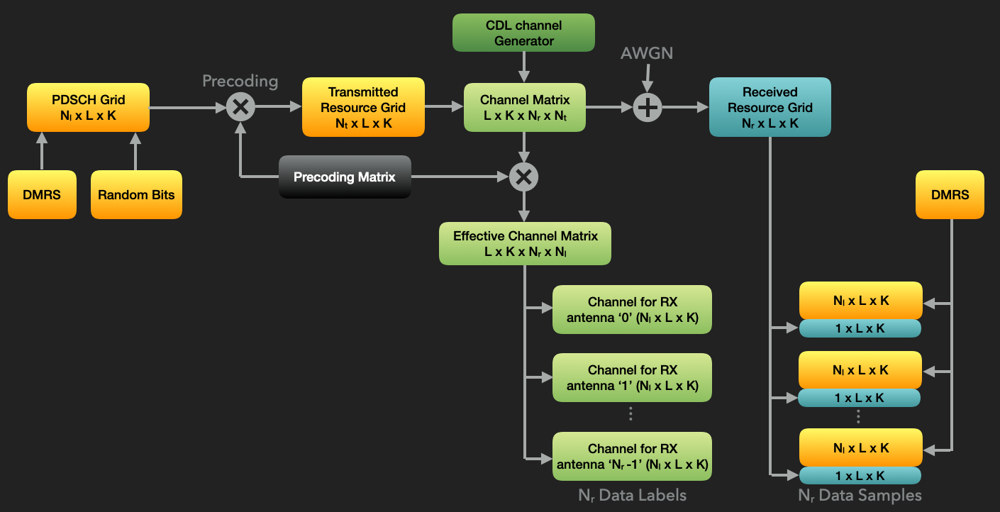

Generating a Dataset for Channel Estimation Training
The first step in this deep-learning example is to prepare a supervised dataset for effective channel estimation. This notebook demonstrates how to use the CDL channel’s getChanGen method to create a channel generator, run an end-to-end communication pipeline, and save training examples for a neural-network-based channel estimator.
Because DMRS reference signals are used for channel estimation, the model learns the effective channel, including the effect of precoding. For each receive antenna, the received DMRS observations are a superposition of the transmitted DMRS signals from all transmission layers after propagation through the effective channel. In this tutorial, we estimate the effective channel for each receive antenna independently. This keeps the example simple and matches the later model input/output format.
Building data samples
At the receiver, the values and locations of the transmitted DMRS symbols are known for all Nl layers. For each receive antenna, we create a complex tensor with shape (Nl+1) x L x K:
The first
Nlmatrices contain the transmitted DMRS symbols for each layer. EachL x Kmatrix has DMRS values at the configured DMRS resource elements and zeros elsewhere.The last
L x Kmatrix contains the received resource-grid values at the DMRS resource elements for one receive antenna, with zeros elsewhere.
The DMRS configuration used in this tutorial is selected so that PDSCH data is not transmitted on other layers at the DMRS resource elements. In particular, the CDM groups without data are configured to avoid mixing PDSCH data with the DMRS observations used by the model (default DMRS configuration).
Finally, because the neural network operates on real-valued tensors, each complex tensor is split into real and imaginary parts. This produces a real-valued sample tensor with shape 2(Nl+1) x L x K. Since there are Nr receive antennas, each communication slot produces Nr training samples.
Building data labels
The desired output is the effective channel matrix for one receive antenna. The ground-truth effective channel is available as a complex 4-D tensor with shape L x K x Nr x Nl. We decompose it into Nr tensors of shape Nl x L x K, one for each receive antenna, and then split each tensor into real and imaginary parts. The resulting label tensor has shape 2Nl x L x K.
This example intentionally keeps the tensor layout fixed to the PDSCH, DMRS, bandwidth, and layer configuration used throughout the tutorial. A more general package example could store additional metadata and construct the model dimensions dynamically, but the fixed layout makes the workflow easier to follow.
The following block diagram shows how the data samples and labels are derived from the DMRS symbols, the received resource grid, and the ground-truth effective channel matrix.

Let’s start by importing the required modules from NeoRadium.
[1]:
import numpy as np
import scipy.io
import time
from neoradium import BandwidthPart, PDSCH, CdlChannel, AntennaPanel, Grid, random
The getSamples function below receives a PDSCH object, a received resource grid, and the ground-truth effective channel. It returns Nr pairs of samples and labels: one pair for each receive antenna.
[2]:
def getSamples(pdsch, rxGrid, actualChannel):
dmrsIdx = pdsch.grid.getReIndexes("DMRS") # This contains the locations of DMRS values
rr, ll, kk = rxGrid.shape # Number of RX antennas, symbols, and subcarriers
ls = np.unique(dmrsIdx[1]) # Unique DMRS symbols
ks = np.unique(dmrsIdx[2]) # Unique DMRS subcarriers
samples = np.zeros( (rr, pdsch.numLayers+1, ll, kk), dtype=np.complex128) # Nr x Nl+1 x L x K
labels = np.transpose( actualChannel, [2,3,0,1]) # Nr x Nl x L x K
for r in range(rr):
samples[r][dmrsIdx] = pdsch.grid[dmrsIdx] # Known DMRS values
samples[r][np.ix_([-1], ls, ks)] = rxGrid[ np.ix_([r], ls, ks) ] # Received grid values at DMRS
# symbol/subcarrier locations
samples = np.concatenate([samples.real, samples.imag],axis=1) # Nr x 2(Nl+1) x L x K
labels = np.concatenate([labels.real, labels.imag],axis=1) # Nr x 2Nl x L x K
return samples, labels
The makeDataset function below receives the number of communication slots (numSlots, where each slot contains 14 OFDM symbols), the list or range of SNR values in dB (snrDbs), the seed used to initialize NeoRadium’s random generator (seed), and the output dataset file name (fileName).
The function implements the communication pipeline shown above. For each OFDM slot, it randomly generates transport-block bits, transmits the corresponding PDSCH resource grid through a randomly generated CDL channel, adds noise, and then calls getSamples to create the supervised learning examples. The samples and labels are aggregated and saved to the specified file.
For this tutorial, the channel and link parameters are deliberately fixed except for the randomized channel profile, delay spread, UE direction, UE speed, and SNR. This provides enough variation to train a useful model while keeping the example compact.
[3]:
def makeDataset(numSlots, snrDbs, seed, fileName=None):
# Create a bandwidth-part object with 24 PRBs and 15 kHz subcarrier spacing
bwp = BandwidthPart(numRbs=24, spacing=15)
pdsch = PDSCH(bwp, numLayers=2, modulation="16QAM") # Create a PDSCH object
pdsch.setDMRS(configType=1, additionalPos=2) # Specify the DMRS configuration
samples, labels = [], []
t0 = time.monotonic() # Start time for time estimation
# Create a channel generator
chanGen = CdlChannel.getChanGen(numSlots, # Number of random channels
bwp, # Bandwidth part
profiles="ABCDE", # Randomly pick a CDL profile
delaySpread=(10,500), # Uniformly sample between 10 and 500 ns
ueSpeed=(0,20), # Uniformly sample the UE speed between 0 and 20 m/s
ueDir=[45, 135, 225, 315], # Randomly pick a UE direction in degrees
carrierFreq=4e9, # Carrier frequency
txAntenna=AntennaPanel([2,2], polarization="x"), # 8 TX antennas
rxAntenna=AntennaPanel([1,1], polarization="x"), # 2 RX antennas
seed=seed)
totalSamples = numSlots*2 # numSlots * Nr
print(f"Creating dataset for SNR={snrDbs} dB with {numSlots:,} slots ({totalSamples:,} samples)")
random.setSeed(seed)
for slotNo, channelMatrix in enumerate(chanGen): # For each random channel from the generator
snrDb = random.integers(snrDbs[0],snrDbs[1]+1) if type(snrDbs)==tuple else random.choice(snrDbs)
pdsch.initGrid() # Create and initialize PDSCH's internal grid
numBits = pdsch.getBitCapacity()[0] # Number of bits available in the resource grid
txBits = random.bits(numBits) # Create random binary data
pdsch.setPdschData(txBits) # Map/modulate the data to the resource grid
precoder = pdsch.getPrecodingMatrix(channelMatrix) # Get the precoder matrix
txGrid = bwp.createGrid(channelMatrix.shape[3]) # Create the transmitted grid
pdsch.precodeTo(txGrid, precoder) # Perform the precoding
rxGrid = txGrid.applyChannel(channelMatrix) # Apply the channel in frequency domain
rxGrid = rxGrid.addNoise(snrDb=snrDb) # Add noise
gtChanMat = CdlChannel.getEffChannel(channelMatrix, precoder) # Ground-truth channel
# Get the dataset samples and labels for the current slot
# newSamples is Nr × 2(Nl+1) × L × K; newLabels is Nr × 2Nl × L × K
newSamples, newLabels = getSamples(pdsch, rxGrid, gtChanMat)
samples += [newSamples]
labels += [newLabels]
dt = time.monotonic()-t0 # Get the elapsed time since the beginning
percentDone = (slotNo+1)*100/numSlots # Calculate the percentage of the task completed
# Print progress messages
print(f" {int(percentDone)}% complete in {int(np.round(dt))} s; "
f"estimated time remaining: {int(np.round(100*dt/percentDone-dt))} s ",
end="\r")
samples = np.concatenate(samples, axis=0) # numSamples x 2(Nl+1) x L x K
labels = np.concatenate(labels, axis=0) # numSamples x 2Nl x L x K
if fileName is not None:
np.save(fileName, np.concatenate([samples,labels],axis=1).astype(np.float32)) # Save the dataset to the specified file
print(f" Done. ({dt:.02f} sec., {samples.shape[0]} samples) Saved to \"{fileName}\". ")
else:
print(f" Done. ({dt:.02f} sec., {samples.shape[0]} samples) ")
return samples, labels
We can now create the datasets for the deep-learning project. The following cell creates separate training, validation, and test dataset files. We use 7000, 1000, and 2000 communication slots for the training, validation, and test datasets, respectively.
For each communication slot, an SNR value is selected randomly from the range -20 dB to 20 dB. Different random seeds are used for the three datasets so that validation and test samples are not reused during training.
[4]:
trainSample, trainlabels = makeDataset(numSlots=7000, snrDbs=(-20,20), seed=1349, fileName="ChestTrain.npy")
validSample, validlabels = makeDataset(numSlots=1000, snrDbs=(-20,20), seed=9431, fileName="ChestValid.npy")
testSample, testlabels = makeDataset(numSlots=2000, snrDbs=(-20,20), seed=1970, fileName="ChestTest.npy")
Creating dataset for SNR=(-20, 20) dB with 7,000 slots (14,000 samples)
Done. (784.52 Sec., 14000 samples) Saved to "ChestTrain.npy".
Creating dataset for SNR=(-20, 20) dB with 1,000 slots (2,000 samples)
Done. (109.86 Sec., 2000 samples) Saved to "ChestValid.npy".
Creating dataset for SNR=(-20, 20) dB with 2,000 slots (4,000 samples)
Done. (218.68 Sec., 4000 samples) Saved to "ChestTest.npy".
[ ]: